サバイバルキッズ2の攻略ページ作成もひと段落したかな、と思ったところで「次はどうしようかな」と考えていました。
せっかくなのでRPGで好きなソフトにしようと思い、SFC版『魔法陣グルグル』を引っ張り出してきました。
このゲームというか、魔法陣グルグル自体がアニメや漫画でお世話になっていた作品なので、けっこう思い入れがあるんですよね。
それで、どうせ遊ぶならプレイ前に端子清掃などを済ませておこうかなと。
攻略情報とは別になりますが、こういうメンテナンスの記録も誰かの役に立つかもしれないので、
攻略記事作成の前にメンテナンスの投稿も混ぜていこうかと思います。
今回のソフトと状態
というわけで今回のソフトは、スーパーファミコン版『魔法陣グルグル』。
昔、中古で買ったもので、どこのお店かは忘れましたが、見かけた瞬間に衝動買いした1本です。
中身は箱・説明書・ソフトが一通りそろっています。
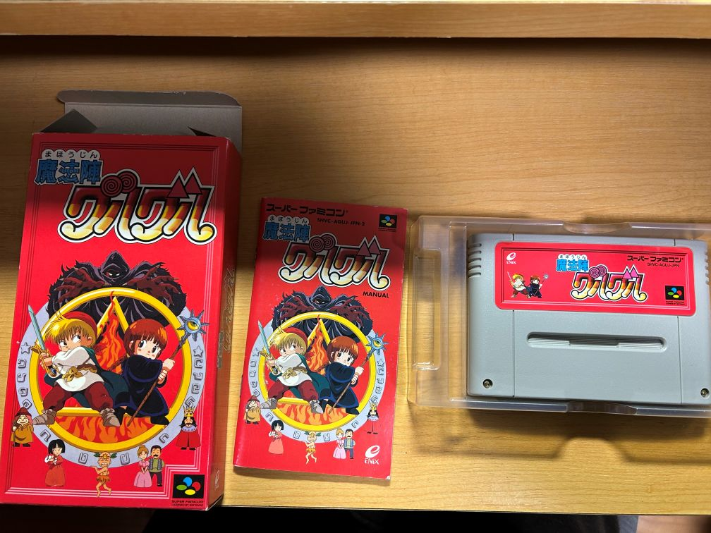
大切にしていたので全体的にかなりきれいな状態に見えますが、とりあえず端子の確認をしていきます。
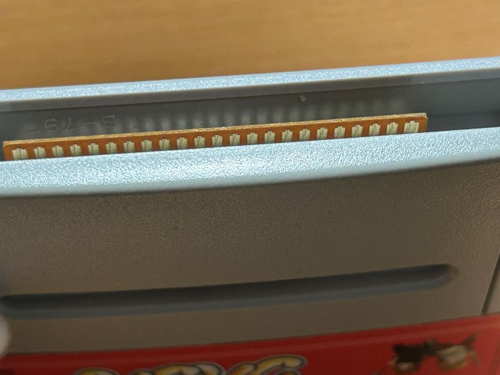
……これ本当に端子清掃必要かなぁ？
と思いつつ、ここで終わってしまうと今回の思いつきが無意味になってしまうので、続行することにしました。
用意したもの
というわけで、今回は軽いクリーニングで済ませます。
用意したものは、無水エタノール・綿棒・特殊ドライバーの3つです。
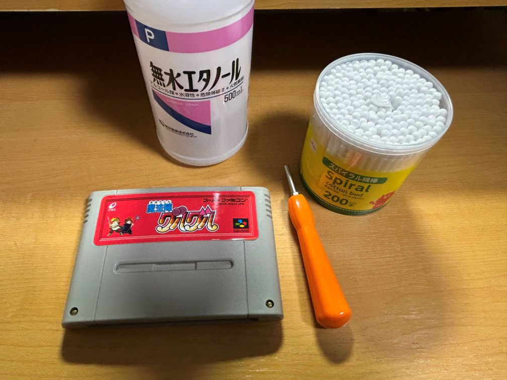
特殊ドライバーは今回の端子清掃だけなら不要だと思いつつ、 「せっかくなので中も見ておこう」と思って分解して基板を確認しました。
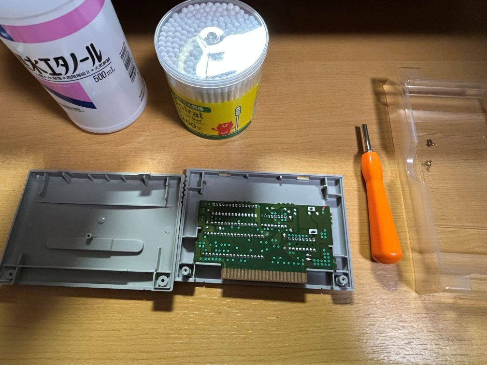
端子清掃の流れ
綿棒と無水エタノールで、端子部分を軽く掃除します。
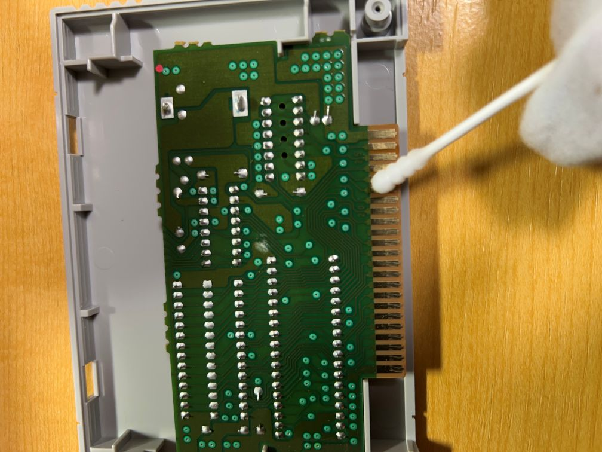
裏面の端子側も念のため同じようにさっとひと拭き。今回は汚れがほぼ無いので、これで十分かなと思います。
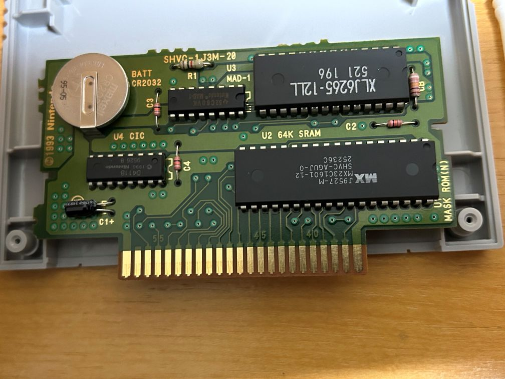
あとは元に戻すだけですが、表面の上の部分に爪があるので、 それを裏面側の溝と合わせてからパーツをはめ込みます。
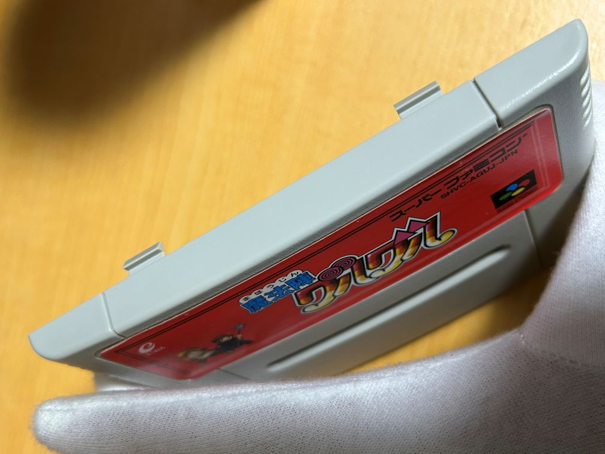
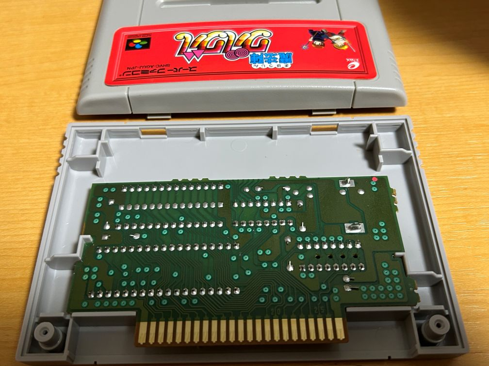
最後にネジを締めてカセット側の作業は完了。
正直、端子に大きな問題がなかったので、作業時間は10分もかかっていないと思います。
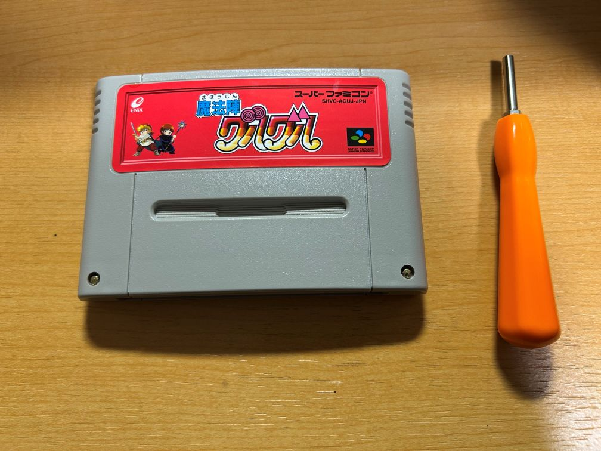
起動確認とバックアップ電池
というわけで、起動確認とバックアップ電池、つまりセーブ機能の確認もついでに行いました。
SFC本体にソフトを差して電源を入れます。
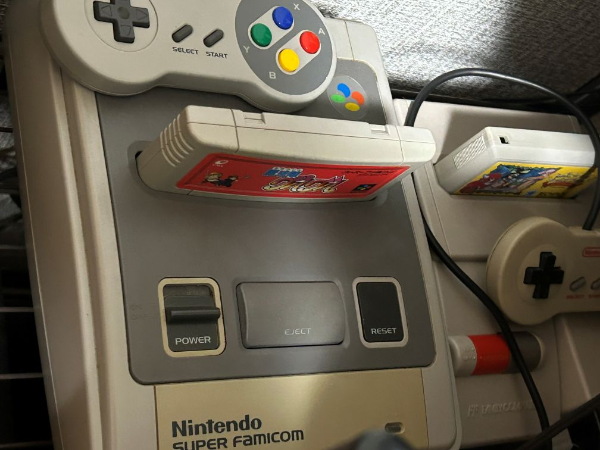
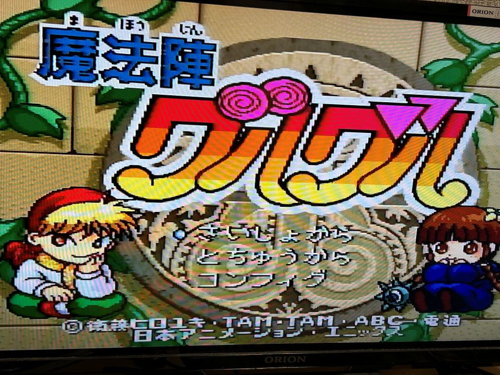
今回は問題なく起動、セーブデータも生きていたので電池交換もスキップです。
おわりに
というわけで、今回は簡単に端子清掃をしてみました。
正直、状態が良かったので「やらなくても良かったかも」と思う部分もありますが、
最初に書いた通り、こんな情報でも誰かの役に立つことを祈って投稿してみました。
無事に起動しましたしセーブ機能も生きていたので、
時間のある時にプレイしつつ、攻略記事の作成にも少しずつ取り掛かっていきたいと思います。
それではこのあたりで。閲覧ありがとうございました。
【掲載しているゲーム画面について】
本記事では、起動確認として『魔法陣グルグル』（スーパーファミコン）の画面を一部掲載しています。
ゲーム画面・作品名・各種権利は、各権利者に帰属します。
『魔法陣グルグル』（スーパーファミコン）
©1995 衛藤ヒロユキ・TAM・TAM・ABC・電通・日本アニメーション・エニックス
最終更新日：2026/05/18